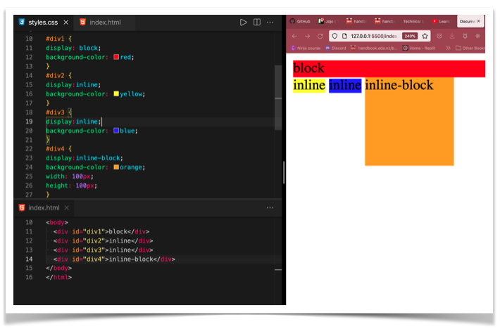

arranges the elements horizontally and it will take up the minimum space podsible. As you can see the yellow or the blue color only takes up the minimum of space to fit all the contents in its div. You can not set width or height with inline display
arranges the elements vertically. The elements do not sit next to each other. The element will take up the full width given to it. See the red div (div 1) which take up the full width of the page. We can set the height but we can not set the width.
arranges the elements horizontally just like inline. However, inline-block also allows us to set the width, height and padding of the container of the elements. As you can see in the orange div (i.e div 4) with display inline-block, we can can set the width to 100px and height 100px in the css.
Below is a picture which explains how different displays work:
